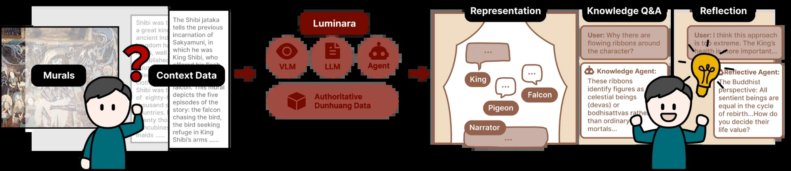
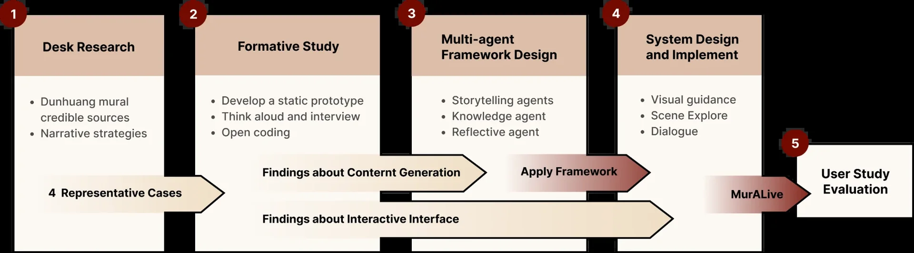
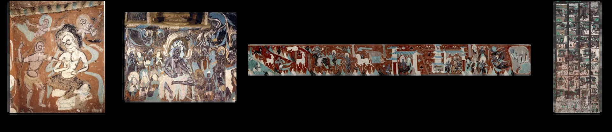
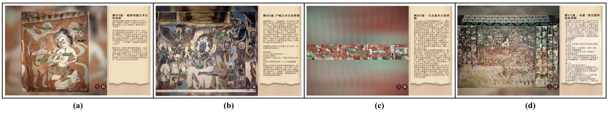
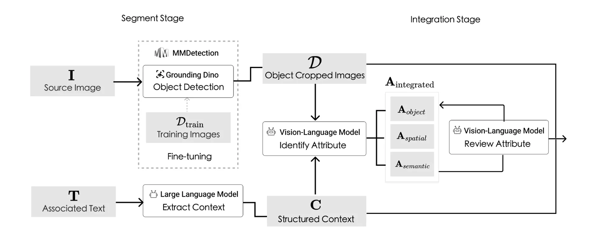
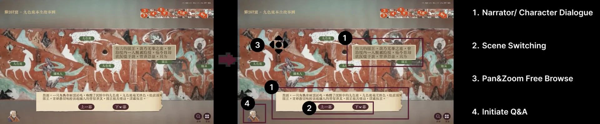
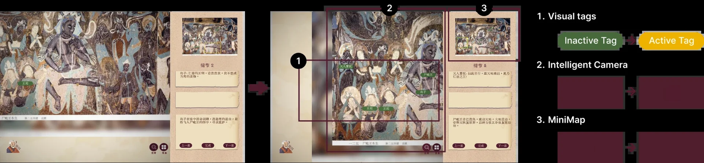
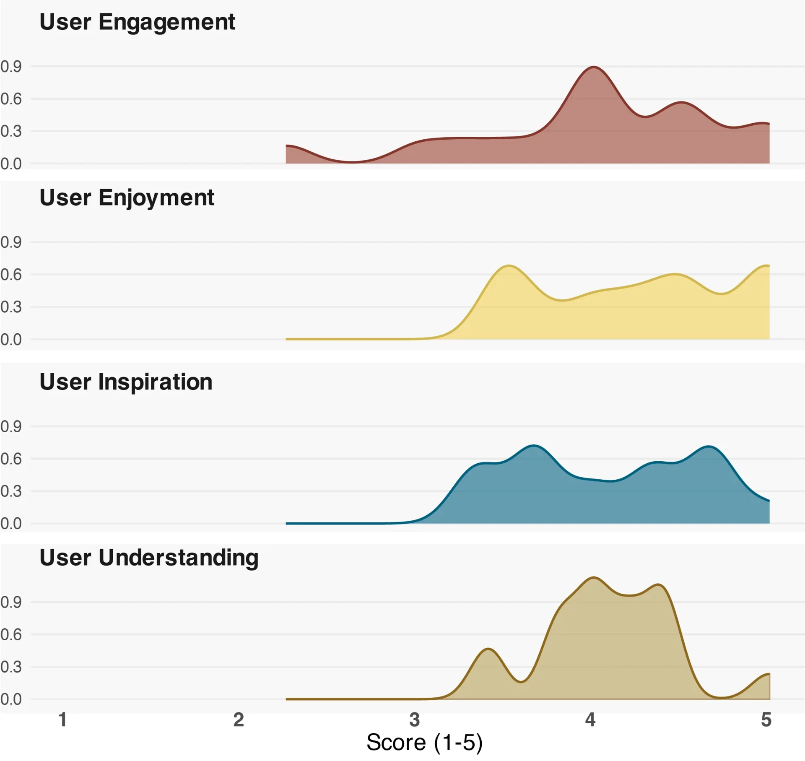

The Team



Jiawen Zhang, Keyi Zeng, Yuan Xu, Liyi Xie, Jingyang Lin, Ke Zhao, Yingjie Ma, Xiaoguang Wang, Xin Tong*
Dunhuang murals, a significant world cultural heritage, present substantial comprehension barriers for general audiences due to their intricate compositions and culturally distant narratives. Existing digital systems limit users' ability to establish coherent cognitive connections between original visual compositions and narrative progression, while reliance on manual content curation restricts both scalability and generalizability. We present MurALive, an AI-powered system that automatically analyzes Dunhuang murals and generates interactive narratives. MurALive integrates vision-language models (VLMs) and large language models (LLMs) to establish visual-textual correspondences, and employs a multi-agent framework (Storytelling, Knowledge, and Reflective agents) to generate interactive narratives. This design addresses key barriers identified through our formative study (N=12): visual-textual correspondence challenges, narrative structure comprehension difficulties, and cultural knowledge gaps. A user study (N=17) demonstrated the system's effectiveness in helping users comprehend complex compositions and storylines, resulting in clear and immersive viewing experiences. This research contributes an automated, generalizable approach and practical design insights for interactive narrative systems in digital cultural heritage.
The project follows a Human-Centred Design methodology across five stages, where the empirical findings of each stage directly inform the next. We began with desk research on Dunhuang mural narrative structures and selected four representative murals as design cases. Using these cases, we built a static narrative prototype and ran a formative study (N=12) to surface comprehension barriers. These findings shaped a multi-agent framework, which we then applied to implement MurALive and evaluated in a user study (N=17).

We compiled a database from authoritative sources, including the Digital Dunhuang Mural Thematic Website, the Dunhuang Encyclopedia Database, the International Dunhuang Programme, and scholarly monographs. Following the Dunhuang Academy's classification system, we focused on narrative murals and classified them into four narrative structures based on spatial organization: monolithic focus, anachronic singular, linear sequential panels, and non-linear sequential panels. Four representative murals exemplifying these structures were selected and validated by two experts from the Dunhuang Academy: (A) King Virudhaka Jātaka (Cave 275), (B) King Shibi Jātaka (Cave 254), (C) Nine-Colored Deer Jātaka (Cave 257), and (D) Visualization of the Contemplation Sutra—Prince Ajātaśatru (Cave 171).

Twelve participants explored the four murals through a static narrative prototype built in Unity, which presented only mural images, character labels, and textual story descriptions. Screen recordings and semi-structured interviews were analyzed through open coding, revealing three primary comprehension barriers:
These barriers were translated into six design insights across two layers—content generation (progressive narrative revelation, contextualized knowledge support, cultural value bridging) and the interaction interface (explicit visual-textual linking, guided visual navigation, spatial overview and orientation).

A two-stage pipeline associates visual elements with textual descriptions. In the segment stage, we collected 370 mural images with text descriptions spanning Early (pre-Sui), Late (post-Sui), and restored murals, annotated 1,757 bounding box instances with dynasty, element, and posture labels, and fine-tuned Grounding DINO within MMDetection to localize figures, while GPT-4o parses unstructured documentation into structured text. In the integration stage, an agent synthesizes detections and text into grounded attributes organized in three levels: object attributes (detections, coordinates, physical actions), spatial attributes (relative positions and relationships), and semantic attributes (narrative roles, names, plot-driven behaviors).
Fine-tuning produced consistent gains over the baseline across the evaluation set: mAP rose from 0.420 to 0.554, AP50 from 0.695 to 0.903, and AR from 0.671 to 0.712. AP50 improved from 0.688 to 0.899 on Early murals, from 0.714 to 0.934 on Late murals, and from 0.689 to 0.873 on restored murals, indicating that domain adaptation transfers across stylistic and conservation differences.

Five specialized agents generate the interactive narrative content:
The system is a standalone Unity application. Character dialogues appear in speech bubbles next to the figures who speak them, while narration appears at the bottom of the screen. Users move through the story with previous and next scene controls, examine details through drag-to-pan and pinch-to-zoom, open a Q&A dialogue with the Knowledge Agent at any time, and meet the Reflective Agent once the story concludes.


Seventeen participants (12 non-experts and 5 cultural heritage professionals) each spent about an hour with the system: a pre-test of mural knowledge, roughly 25 minutes exploring all four murals with think-aloud commentary, then a post-test, a 16-item online exhibition experience questionnaire, the System Usability Scale, and a semi-structured interview.
Learning gains: paired t-tests showed significant improvements on both dimensions (all p < 0.001). Story Content scores rose from M = 3.71 (SD = 2.87) to M = 8.71 (SD = 1.21), and Visual Structure scores from M = 2.94 (SD = 1.60) to M = 7.53 (SD = 1.55), both with large effect sizes (Cohen's d = 1.53 and 2.10).
Exhibition experience: ratings were consistently positive across the four dimensions—Enjoyment (M = 4.26, SD = 0.58), Inspiration (M = 4.08, SD = 0.55), Understanding (M = 4.08, SD = 0.39), and Engagement (M = 4.01, SD = 0.72). The mean SUS score was 69.56 (SD = 11.90), indicating good usability.
Qualitative findings: participants reported that progressive storytelling and spatial guidance made otherwise opaque compositions legible, and several developed transferable knowledge about compositional structures—recognizing, for example, that murals can be read from both ends toward the center or along an S-shaped path, and applying that to unfamiliar murals. Preferences for narrative linearity nevertheless diverged, pointing to a design tension between guided narration and free exploration.
